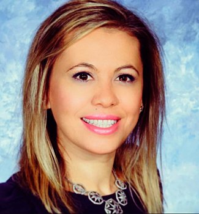

Care for your smile.
Space to feel
like yourself.
General and cosmetic dentistry in Culver City, with Dr. Eda Jokic. Get to know the practice, explore your options and take the next step.

Meet Dr. Eda Jokic
NYU College of Dentistry graduate
A little about your dentistWhat brings you in?
A check-up, a question or a change you’ve been considering. Explore the practice’s care and talk with the team about an appointment.
Your everyday dental care.
Start with a conversation about regular visits and the care you’re looking for.
Ask about general care- Dental examinations
- Cleanings and dental hygiene
- Fillings and crowns
- Questions about ongoing care
A consultation about your smile.
Explore options with Dr. Jokic and discuss what might suit your individual goals.
Ask about smile options- Teeth whitening
- Veneers
- Bonding
- Invisalign consultations
Talk through the options.
The practice offers restorative and implant dentistry. An appointment is the place to discuss your needs and a suitable plan.
Ask about restoring teeth- Dental implant consultations
- Crowns
- Bridges
- Dentures
Need to speak to the office?
Please call the practice directly about an urgent dental concern so the team can discuss availability.
Ask about urgent visits- Speak with the office by phone
- Ask about appointment availability
- Monday–Friday, 9 am–6 pm
- Call (310) 313-1063
Dr. Eda Jokic.
A world of experience.
A personal connection.
Dr. Jokic’s path to dentistry has taken her from Albania to Bulgaria and New York — and now to Culver City.
After completing her first dental degree in Bulgaria, she continued her education at NYU College of Dentistry, graduating from its DDS program in 2014.
Her practice includes general, cosmetic and implant dentistry, alongside Invisalign consultations. She enjoys working with people of all ages and the connection between art and dentistry.
Your Culver City
dental practice.
4740 Inglewood Boulevard
Culver City, CA 90230
Questions welcome.
How do I arrange a first visit?
Call (310) 313-1063 to speak with the team about availability. The office can help you prepare for your first appointment.
Can I ask about insurance?
Yes. Contact the office with questions about your plan and any expected costs before arranging treatment.
What if I need an urgent visit?
Call the practice directly to discuss availability. The sample form on this preview is not monitored and cannot book a visit.
Does the sample form book an appointment?
No. This concept shows a proposed request experience. It does not send information or reserve an appointment.
Let’s find a time
to talk.
A simple first step, with a real person at the other end.
Call EVE Dental
Email the team
Find us
4740 Inglewood Blvd
Culver City, CA 90230
Office hours
Monday–Friday · 9 am–6 pm